A Mutliplayer, Multiscreen, Collaborative Path Building Game.
an experiment by little-boat:studios.
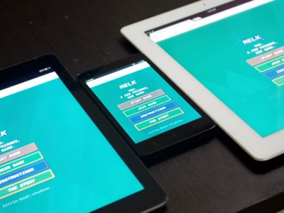
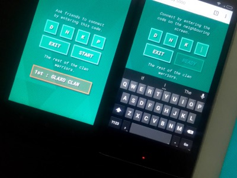
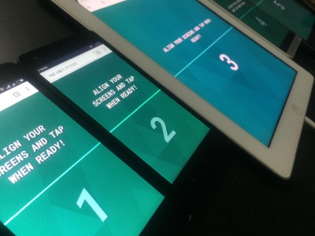
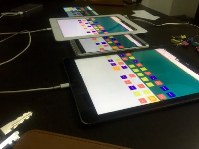
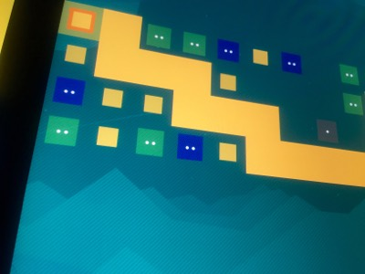
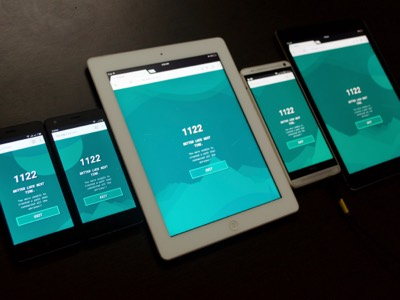
visit horlicks.heroku.com on your phone or tablet.
The Making
Melk was build in 3 weeks and it was not an easy game to build. Our team shares their experience.
The Story
Melk is an experiment built for the browser. It is a collaborative path building game which takes place across multiple device screens.
About
We were trying to build something that will move the kids from playing on one device to collaborating with friends on multiple devices. It started with the basic idea of connecting all the screens together to create one unified game. We built a very minimal board game where the objective of the game is to connect all the shrines on the screen by clearing obstacles across devices to create a unified path across all the screens.
Solution
Kids now a days are more focused on playing on a single device then playing together with their friends. So we created a game that spans across devices and lets everyone play on a single canvas. The kids needs to interact with other players and form a strategy based on whats happening on different devices. They need to collaborate and come to a common solution to solve the given problem.
Cross Platform
On the other hand, we created this as a browser game that works just as a native game. The advantage of this approach is, the game is cross-platform and works on any device with a browser. May it be a android or a ios device. This helps kids with any type of device come together and play. And for us its a added advantage as we can ship this game on a very larger scale with less efforts, just hit horlicks.heroku.com and get going.
Horlicks Branding
Apart from building a unique concept for getting kids to play together, the game brands horlicks in a very unique way. There are clans which have different skills eg. Taller, Stronger, Sharper. Based on this varying skillset across clans the kids need to think and play according to the skills of the clan they select. Hence in a way or the other including the moto of Horlicks of being taller, stronger and sharper.
The Tech
We used a very unique set of stack to build this game, which included heroku, node.js, socket.io, html5 canvas
Mobile Browser
Melk runs on any given browser that has html5 support, be it chrome or safari.
HTML5 Canvas
We used HTML5 canvas for speedy and pixel-perfect animation.
Heroku
Heroku is where all the backend and the files of the game resides.
Node.js
Node.js is used for all the server side scripting and for programming the game logic.
Socket.io
We used socket.io for easy socket programming for connecting all the players to the server and vice versa.
Across.js
Is a small js library we wrote while building the game for mapping all the screen resolutions and getting actual dimesions for uniformity.
horlicks.heroku.com
MELK
You. A few friends, one game.
Start Game
Join Game
Instructions
The Story
"Keep the Clan in Order"
The viking laws suggest you keep the device vertical.
0
Replay
Exit
Build
You. A few friends, one game.
Start Game
Join Game
The Story
Select your Clan
Select a clan based on its skills.
Glaxo
Smith
Kline
Stark
Back to Home
Clan Laws & Rules
Follow the rules to keep the clan in order.
Objective
Connect all the shrines before the melk on all the screen runs out!
Obstacles
The colored blocks are the obstacles which when tapped will break.
Obstacles Strength
The dots on the blocks denote the strength/ or the no of taps required to break the block.
Health
The white background behind the screen shows the quantity of Melk remaining.
Swipe Down
Swipe down to tell others that your done building the path on your screen.
Swipe Left
Swipe left to give melk to the clan on your left.
Swipe Right
Swipe left to give melk to the clan on your right.
How it Ends?
When everyone swipes down and lets everyone knw that the path is done, the gods will automatically try to build a path and if your successful it will reflect on the screen.
Back to Home
The Story
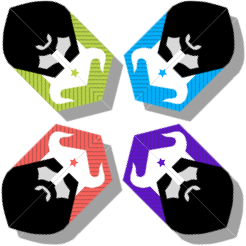
The story goes back to the Viking's age. There are mainly four clans possessing different skillset.
The Glaxo Clan
The Glaxo Clan is known for being tallest of all clans.
The Smith Clan
The Smith Clan are know for their super strength capabilities.
The Kline Clan
The Kline Clan clever, smart and sharpest of all.
The Stark Clan
The Stark Clan is jack of all trades.
Background
All of the clans possesed different skillset, some were taller, some were sharper and the others possed the skill of being stronger. The all envied others, but on the other hand worshiped the same Gods.
Melk
All of the clans used to consume milk just like we do to improve our skills. It was called "Melk" back then thus the name of the game.
The Phenomenon
The gods were unpleased with the nature and the fights amongst the clans, and so the gods started to neglect the prayers of the clans.
The Elders Speak
The eleders of all the clans came together to find the solutions to this problem and the clans decided to come together so as to please the Gods.
The Shrines
Every Clans had shrines in their village through which they used to worship and pray to the Gods.
The Get Together
All of the clans came together and decided to connect all the Shrines together and form a path across shrines so that the Gods could see their unity and peace amongst them.
The Mission
Now the objective was to clear all the obstacles from the path that connected, The obstacles were of different types and reacted to different clans in different strengths. The clans could only use the available melk with them to use their skills.
The Collaboration
If the melk from one of the clans were over the clans next ot them used to provide them with melk so that they can reuse their skills and achieve the mission.
Back to Home
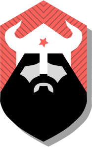
The Glaxo Clan.
The Glaxo Clan is known for being tallest of all clans.
Taller
Stronger
Sharper
Back
Select
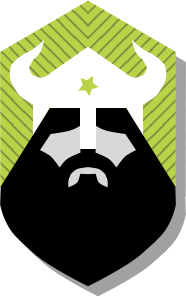
The Smith Clan.
The Smith Clan are know for their super strength capabilities.
Taller
Stronger
Sharper
Back
Select
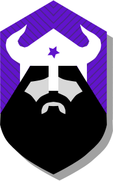
The Kline Clan.
The Kline Clan clever, smart and sharpest of all.
Taller
Stronger
Sharper
Back
Select
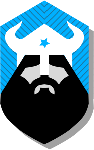
The Stark Clan.
The Stark Clan is jack of all trades.
Taller
Stronger
Sharper
Back
Select
Ask friends to connect by entering this code.
Exit
Start
The rest of the clan warriors.
Connect by entering the code on the neighbouring screen.